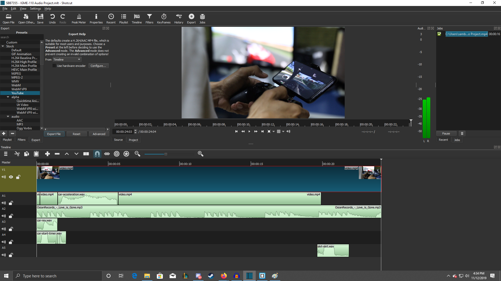

I decided to take the stock video of a racing game. Then with this video I decided to take more upbeat and more EDM style of music as the soundtrack so that it is more like the game I wanted the racing game to be like. Then I made a sound effect to match the timer at the start of the race. Then I made a car accelerating to match the car in the game as it accelerated. Then I made a "skrt" noise as if the car was skidding or breaking very hardly towards a turn. I also made the engine of the car rev before the start of the race, as most racers do that as a flex.
By: Joeseph Redfield
By: OsianRecords